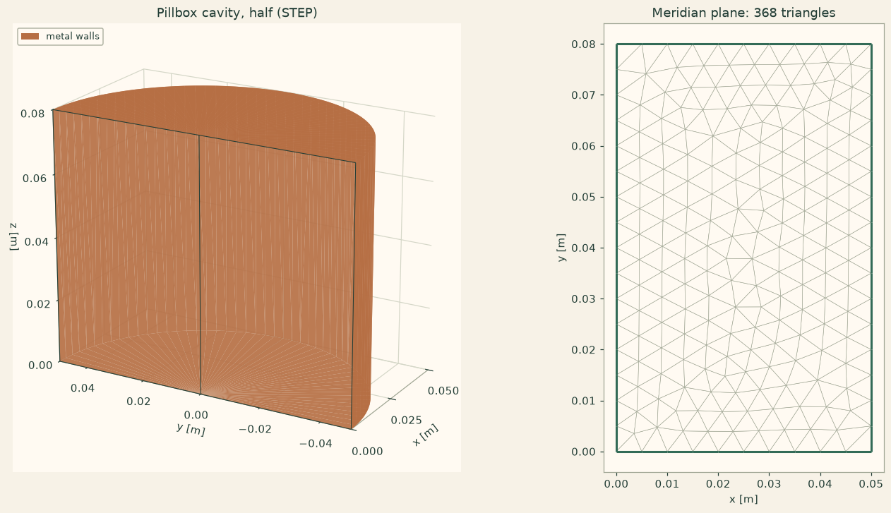

Docs › Examples › Axisymmetric cavity resonator
Microwaves, cavity resonators · 2D-axisymmetric
Axisymmetric cavity resonator
The resonant modes and fields of a closed cylindrical (pillbox) cavity, computed on its meridian plane for the TE0, TM0 and vector families of azimuthal order 0, 1 and 2.

What it computes
OneSimulation reads half the cavity from STEP, cuts the meridian rectangle and solves the eigenvalue problem five ways: the scalar E_phi (TE0) and H_phi (TM0) fields on quadratic Lagrange elements and the full vector field of azimuthal orders 0, 1 and 2 on Nedelec elements, whose gradient kernel is projected out so that every computed mode is physical; all modes between 1 and 6 GHz are returned and the element convergence is measured for first- and second-order Nedelec elements. The script that builds the STEP file comes with the notebook.
What it checks
Every family finds exactly the closed-form number of modes in the window (2, 5, 7, 7 and 4) with largest deviations from the Bessel frequencies of 2.1e-5 to 1.0e-4; TM010 at 2.294851 GHz agrees to 3.7e-7, and the frequency error falls with the observed orders 2.2-2.3 (Nedelec order 1) and 4.0-4.2 (order 2).
Geometry
The notebook starts at the import of the CAD file axisymmetric_cavity_resonator.step: STEP (AP242), readable by any CAD program, with the names of the faces that the boundary conditions use. Put it next to the notebook.

The geometry script
The script axisymmetric_cavity_resonator_geometry.py builds the geometry with the CAD objects of OneSimulation and writes the file. Change a dimension there, run it, and run the notebook again.
"""Geometry of the OneSimulation example "Axisymmetric cavity resonator".
Builds the air inside a closed cylindrical cavity (pillbox) of radius 50 mm and height 80 mm as half
a solid of revolution about the z axis with the CAD objects of OneSimulation, and writes
axisymmetric_cavity_resonator.step. Its meridian plane is a rectangle; the metal faces (the side
wall and the two end plates) are named `walls`.
"""
import numpy as np
from onesim.cad.d2 import Path, Profile, Segment
from onesim.cad.d3 import Revolution
radius, height = 0.05, 0.08
outline = Path(
(0.0, 0.0),
(
Segment((radius, 0.0), name="walls"),
Segment((radius, height), name="walls"),
Segment((0.0, height), name="walls"),
Segment((0.0, 0.0), name="axis"),
),
)
Revolution(profile=Profile(outline), angle=np.pi).rotated((0, 0, 1), -np.pi / 2).save(
"axisymmetric_cavity_resonator.step"
)The notebook
The complete notebook, cell by cell. Run it to produce the figures and the comparison printout.
A closed metal can of radius \(R=50\) mm and height \(H=80\) mm (a pillbox cavity) is a body of revolution: its fields are sums of azimuthal modes \(\mathbf E(r,\varphi,z)=\big(E_r,E_\varphi,E_z\big)(r,z)\,e^{im\varphi}\), and each order \(m\) is a 2D problem on the meridian plane \((r,z)\), a rectangle. The resonances solve
Two formulations of FrequencyDomainMaxwell are used:
- for \(m=0\) the field splits into TE\(_{0np}\) modes with only \(E_\varphi\) (polarization
Ephi) and TM\(_{0np}\) modes with only \(H_\varphi\) (polarizationHphi), one scalar each on Lagrange elements; - for any \(m\) the polarization
Erphizsolves all three components: Nédélec elements for \((E_r,E_z)\) and Lagrange elements for \(rE_\varphi\). The gradient fields of zero frequency are exact in this pair of spaces andelectromagnetic_modesprojects them out, so every computed mode is a physical one.
| boundary | condition | |---|---| | walls (side wall, end plates) | perfect electric conductor, \(\mathbf n\times\mathbf E=0\) | | axis \(r=0\) | regular: \(rE_\varphi=0\), and \(E_z=0\) for \(m\neq0\) |
Reference. J. D. Jackson, Classical Electrodynamics, 3rd ed., §8.7; D. M. Pozar, Microwave Engineering, 4th ed., §6.3. The modes of the cylinder resonate at
with \(x_{mn}=j'_{mn}\), the zeros of \(J_m'\), and \(p\geq1\) for TE\(_{mnp}\), and \(x_{mn}=j_{mn}\), the zeros of \(J_m\), and \(p\geq0\) for TM\(_{mnp}\). The lowest are TM\(_{010}\) at 2.295 GHz and TE\(_{111}\) at 2.569 GHz; TE\(_{0np}\) and TM\(_{1np}\) share their frequencies (\(j'_{0n}=j_{1n}\)).
import numpy as np
from onesim.cad.exchange import load
from onesim.materials.electromagnetic import IsotropicElectromagneticMaterial
from onesim.meshing import TriangularMesher
from onesim.numerics import Numerics
from onesim.numerics.fem import FiniteElement, Lagrange, Nedelec, RevolvedH1SpaceFactory
from onesim.numerics.linear import ComplexSparseDirect
from onesim.physics.electromagnetics import (
FrequencyDomainMaxwell,
PerfectElectricConductor,
electromagnetic_modes,
)
from onesim.simulation import Problem, Simulation
from onesim.visualization import plots, theme
from scipy.special import j0, jn_zeros, jnp_zeros
theme.set()Geometry and mesh
The STEP file holds half of the cavity as a solid of revolution; section with the plane \(y=0\) returns the meridian rectangle with its metal sides named walls. Triangles of 5 mm, a tenth of the radius.
part = load("axisymmetric_cavity_resonator.step")
plane = part.section((0, 1, 0))
radius, height = plane.size[:2]
mesh = TriangularMesher(target_size=radius / 10).generate(plane)
fig = plots.figure(1, 2, size=(13, 6.5))
plots.geometry(
part,
selection={"metal walls": part.boundaries.walls},
labels=False,
camera=plots.Camera(elevation=20, azimuth=-150),
title="Pillbox cavity, half (STEP)",
ax=fig[0],
)
plots.mesh(
mesh,
groups=("all",),
legend=False,
title=f"Meridian plane: {mesh.cell_count} triangles",
ax=fig[1],
)
plots.show()Eigenfrequency study
Five models on the same mesh: the scalar TE\(_0\) and TM\(_0\) families (quadratic Lagrange elements) and the vector field for \(m=0,1,2\) (second-order Nédélec elements). Each is solved once and electromagnetic_modes returns every resonance between 1 and 6 GHz.
light = 299792458.0
lagrange = Numerics(
spatial=FiniteElement(element=Lagrange(order=2), provider=RevolvedH1SpaceFactory()),
linear_solver=ComplexSparseDirect(),
)
nedelec = lambda order: Numerics(
spatial=FiniteElement(
element=Nedelec(order=order), provider=RevolvedH1SpaceFactory()
),
linear_solver=ComplexSparseDirect(),
)
model = lambda polarization, m=None: FrequencyDomainMaxwell(
domain=plane.domain(),
frequency=3e9,
material=IsotropicElectromagneticMaterial(),
polarization=polarization,
phasor_convention="exp(-i*omega*t)",
amplitude_convention="peak",
**({} if m is None else {"azimuthal_mode": m}),
)
study = lambda mm, numerics, grid=mesh, window=(1e9, 6e9): electromagnetic_modes(
Simulation(
problem=Problem(
name="Pillbox cavity",
geometry=plane,
physics=(mm,),
boundary_conditions=(
PerfectElectricConductor(physics=mm, boundary=plane.boundaries.walls),
),
),
mesh=grid,
numerics=numerics,
).solve_stationary(),
mm,
frequency_range=window,
)
models = {
"TE0 (E_phi)": model("Ephi"),
"TM0 (H_phi)": model("Hphi"),
**{f"m = {m}": model("Erphiz", m) for m in (0, 1, 2)},
}
modes = {
name: study(models[name], lagrange if name.startswith("T") else nedelec(2))
for name in models
}Results
Every family against the closed-form list of its window: TE\(_0\) and TM\(_0\) take the Bessel zeros of order zero; the vector model of order \(m\) holds both, TE\(_{mnp}\) and TM\(_{mnp}\).
resonance = lambda x, p: light / (2 * np.pi) * np.hypot(x / radius, p * np.pi / height)
te = lambda m: [
(f"TE{m}{n + 1}{p}", resonance(x, p))
for n, x in enumerate(jnp_zeros(m, 4))
for p in range(1, 6)
]
tm = lambda m: [
(f"TM{m}{n + 1}{p}", resonance(x, p))
for n, x in enumerate(jn_zeros(m, 4))
for p in range(0, 6)
]
analytic = {
"TE0 (E_phi)": te(0),
"TM0 (H_phi)": tm(0),
**{f"m = {m}": te(m) + tm(m) for m in (0, 1, 2)},
}
analytic = {
name: sorted(
[item for item in values if 1e9 <= item[1] <= 6e9], key=lambda item: item[1]
)
for name, values in analytic.items()
}
print(
f"{'family':12s} {'modes found':>11s} {'expected':>9s} {'largest deviation':>18s}"
)
for name in models:
exact = np.array([f for _, f in analytic[name]])
found = modes[name].resonance_frequencies
print(
f"{name:12s} {modes[name].mode_count:11d} {len(exact):9d} {np.max(np.abs(found / exact - 1)) if len(found) == len(exact) else np.nan:18.1e}"
)
print()
print(
f"{'mode':8s} {'f computed [GHz]':>17s} {'f exact [GHz]':>14s} {'deviation':>10s} (vector model, m = 0 and 1)"
)
for name in ("m = 0", "m = 1"):
for (label, f0), f in list(zip(analytic[name], modes[name].resonance_frequencies))[
:7
]:
print(f"{label:8s} {f / 1e9:17.6f} {f0 / 1e9:14.6f} {f / f0 - 1:10.1e}")
print(
"TE0 from E_phi against the TE modes of the vector model (m = 0):",
f"{np.max(np.abs(np.array(sorted(modes['TE0 (E_phi)'].resonance_frequencies)) / np.array(sorted(f for (label, _), f in zip(analytic['m = 0'], modes['m = 0'].resonance_frequencies) if label.startswith('TE'))) - 1)):.1e}",
)Convergence of the elements
The lowest TM\(_{010}\) and TE\(_{111}\) resonances on four meshes with first- and second-order Nédélec elements: the frequency error falls as \(h^{2}\) and \(h^{4}\), twice the order of the field error, the property of a Galerkin eigenvalue method.
sizes = radius / np.array([2, 4, 8, 16])
grids = {h: TriangularMesher(target_size=h).generate(plane) for h in sizes}
errors = {
f"{label}, Nedelec order {order}": np.array(
[
abs(
study(
model("Erphiz", m), nedelec(order), grids[h], (0.9 * f0, 1.1 * f0)
).resonance_frequencies[0]
/ f0
- 1
)
for h in sizes
]
)
for label, m, f0 in (
("TM010", 0, resonance(jn_zeros(0, 1)[0], 0)),
("TE111", 1, resonance(jnp_zeros(1, 1)[0], 1)),
)
for order in (1, 2)
}
for label, values in errors.items():
print(
f"{label:24s} errors {' '.join(f'{v:.2e}' for v in values)} observed order {np.polyfit(np.log(sizes), np.log(values), 1)[0]:.2f}"
)Figure
Top: the electric field of four modes in the meridian plane (stored energy 1 J): TM\(_{010}\), a uniform \(E_z\) with the Bessel profile \(J_0(j_{01}r/R)\); TE\(_{011}\), an azimuthal \(E_\varphi\) that vanishes on the axis and the walls; TM\(_{011}\); and TE\(_{111}\) (\(m=1\)), the mode with the field across the axis. Bottom: the computed frequencies of all families against the closed form, and the convergence of the elements.
shown = [
("m = 0", "TM010", 2),
("m = 0", "TE011", 1),
("m = 0", "TM011", None),
("m = 1", "TE111", None),
]
nodes = np.asarray(mesh.coordinates)
across = np.linspace(0, 1, 41)
profile = np.abs(
modes["m = 0"]
.mode(0)
.field(models["m = 0"].electric_field)
.evaluate(
np.column_stack((0.999 * radius * across, np.full_like(across, height / 2)))
)[:, 2]
)
fig = plots.figure(2, 4, size=(24, 12))
for panel, (name, label, component) in enumerate(shown):
index = [item[0] for item in analytic[name]].index(label)
field = modes[name].mode(index).field(models[name].electric_field).evaluate(nodes)
values = (
np.abs(field[:, component])
if component is not None
else np.sqrt(np.sum(np.abs(field) ** 2, axis=1))
)
plots.heatmap(
nodes[:, 0],
nodes[:, 1],
values,
triangles=np.asarray(mesh.cells),
length_unit="mm",
xlabel="r [m]",
ylabel="z [m]",
label=(
("|E_r|", "|E_phi|", "|E_z|")[component] + " [V/m]"
if component is not None
else "|E| [V/m]"
),
title=f"{label}, {modes[name].resonance_frequencies[index] / 1e9:.3f} GHz",
ax=fig[panel],
)
plots.line(
points={
name: (
np.array([f for _, f in analytic[name]]) / 1e9,
modes[name].resonance_frequencies / 1e9,
)
for name in models
},
reference={"computed = exact": (np.array([1.0, 6.0]), np.array([1.0, 6.0]))},
markers=True,
xlabel="closed-form frequency [GHz]",
ylabel="computed frequency [GHz]",
title="Every mode from 1 to 6 GHz",
legend="upper left",
ax=fig[4],
)
plots.convergence(
sizes * 1e3,
errors,
order=(2, 4),
xlabel="element size h [mm]",
ylabel="relative frequency error",
title="Convergence of the elements",
legend="lower right",
ax=fig[5],
)
plots.bars(
[name.replace(" (", "\n(") for name in models],
{"modes found": [modes[name].mode_count for name in models]},
reference={"closed form": [len(analytic[name]) for name in models]},
ylabel="modes between 1 and 6 GHz",
title="No spurious modes",
ax=fig[6],
)
plots.line(
points={"TM010 |E_z|, computed": (across, profile / profile[0])},
reference={"J0(j01 r / R)": (across, j0(jn_zeros(0, 1)[0] * across))},
xlabel="r / R",
ylabel="E_z / E_z(axis)",
title="TM010 radial profile at mid-height",
legend="lower left",
ax=fig[7],
)
plots.show()Going further
Raise azimuthal_mode to follow the families of higher \(m\) (each 3D mode with \(m\neq0\) is a pair, \(\cos m\varphi\) and \(\sin m\varphi\)), or add a dielectric puck on the axis to the STEP file: the TM\(_{010}\) mode is pulled down most, since its electric field is strongest there.